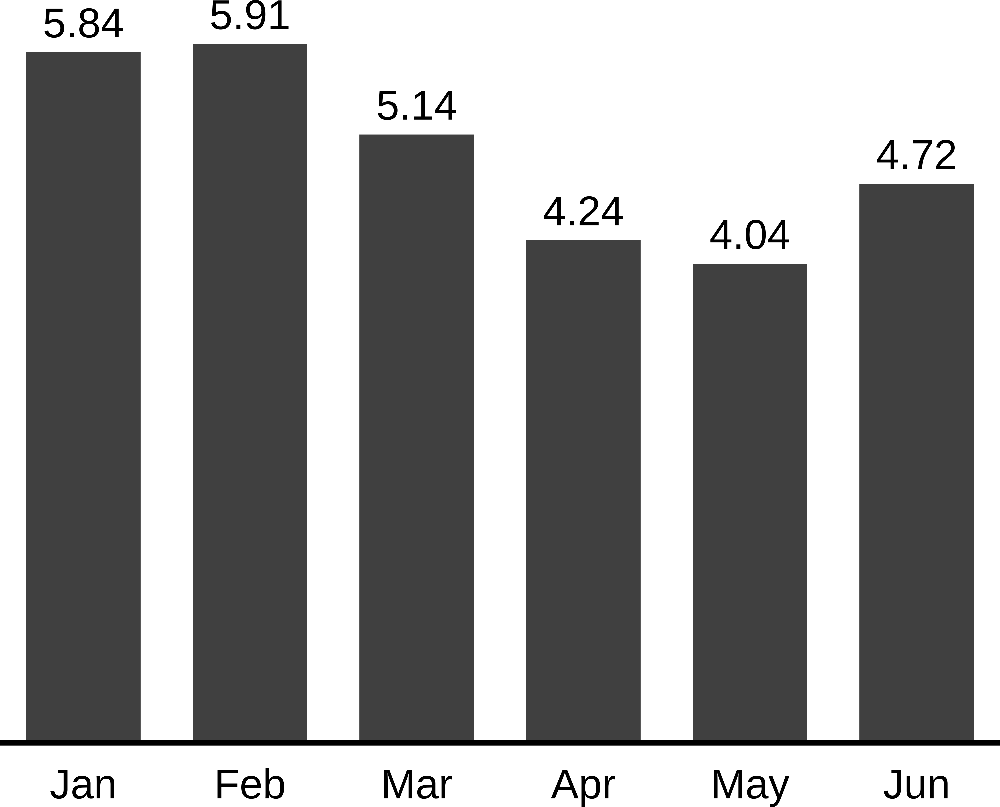
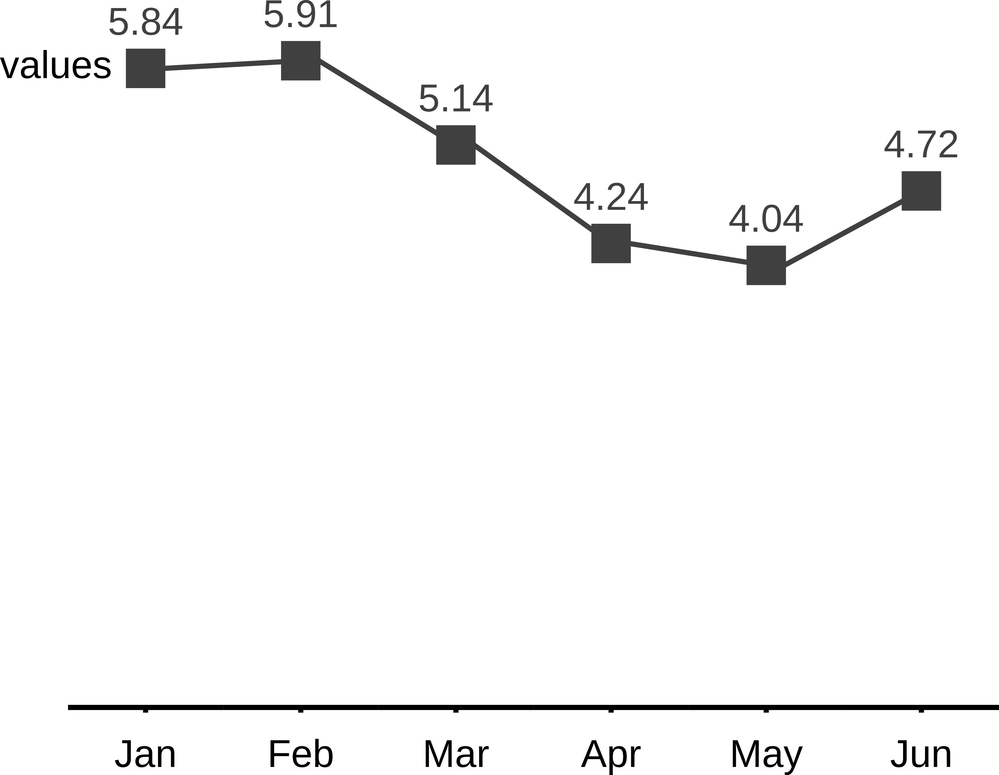

The goal of tidycharts is to enable R users to create charts inspired by International Business Communication Standards (IBCS). The plots are generated in SVG format, so embedding them in HTML documents is straight forward.
Installation
You can install the released version of tidycharts from CRAN with: The package is going to be deployed to CRAN, so that the installation process will look like:
install.packages("tidycharts")But for now only development version from GitHub can be installed with:
devtools::install_github("MI2DataLab/tidycharts")Example
How to create IBCS inspired charts using tidycharts?
library(tidycharts) # load the package
# create some data to visualize
df <- data.frame(months = month.abb[1:6],
values = round(5 + sin(1:6), 2))
# create chart in a form of character vector containing SVG content
column_chart(df, x = 'months', series = 'values') %>%
SVGrenderer() # render and show the SVG  You can easily create other type of plots, ie. lineplots:
line_chart_markers(df, x = df$months, series = 'values', series_labels = 'values') %>%
SVGrenderer()